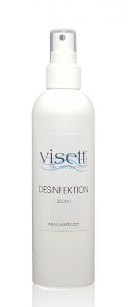

Welcome to Natürliche Gesundheit
Der gepflegte Mann - so gelingt die morgendliche Hygiene
2020.12.21 18:36
Alle Kategorien Beauty & Styling Haarige Angelegenheit Haare Frisuren Haare färben Haare schneiden Geht unter die Haut Haut Nägel Schminkschule Männer Piercing & Tattoo In Style Outfit Accessoires Farben & Kleidung kombinieren Beruf & Karriere Aus- und Weiterbildung Ausbildung & Umschulung Studium Wo soll es hingehen? Bewerbung Berufswahl Minijob & Co Selbständigkeit Berufsalltag Buchhaltung, Steuer & Co Arbeitsrecht Berufsleben Kommunikation im Beruf Feiern & Abschiede Elektronik & Computer Gut unterhalten Home Entertainment Spiele Minecraft Die Sims Spielekonsolen Computer Netzwerk & WLAN Apple Windows Computerzubehör PC-Komponenten Laptop & Notebook Computerprogramme Software Office Paket Dateien öffnen Converter Bildbearbeitung Essen & Trinken Alles über Lebensmittel Lebensmittel Küchenexpertise Koch- & Backschule Schlank & Gesund Mmh, lecker! Rezepte Rezepte für Getränke Familie & Kinder Rund ums Kind Baby Erziehung Kindergarten Schulkind Spielzeug Pubertät Familienbande Kinderwunsch & Schwangerschaft Familiendokumente Familienfeiern Trauerfall Trennung Garten Der eigene Garten Gartengestaltung Gartenbau Das Gartenjahr Der grüne Daumen Gartenpflanzen Obst & Gemüse Rasen Garten erleben Bäume & Sträucher Zierpflanzen Tiere im Garten Wohlfühlen im Grünen Gartenmöbel & Deko Balkon & Terrasse Querbeet Geld Nur Bares ist Wahres Banken & Zahlungsverkehr Geld vom Staat Steuern & Steuererklärung Anlage & Vermögen Erbschaft Geldanlage Münzen & Gold Immobilien Gut abgesichert Altersvorsorge Rente Versicherung Gesundheit Fachärzte Hals, Nase, Ohren Rücken Bauch & Verdauung Gynäkologie Wenn s weh tut Beschwerden Krankheiten Verletzungen Beschäftigungsmöglichkeiten bei Krankheit Gesund werden Allgemeinbefinden Psyche Haut, Haare & Nägel Genesung Medizin Gesundheitssystem Anatomie Handarbeit Nadel & Faden Filzen Häkeln Nähen Stricken Schönes Geschmeide Schmuck selber machen Handy & Festnetz Smart & Mobil Apps & Spiele Smartphones Telefonieren Handynutzung Mobilfunkvertrag Festnetz Haushalt Wohnen & Leben Raumklima Feiertage Tipps & Tricks Hausmittel Tiere vertreiben Hausstand Haushaltsgeräte Haushaltsführung Saubermachen & Aufbewahren Reinigen & Pflegen Textilien & Leder Haushaltschemie Haustiere Wie Hund & Katz Hunde Katzen Kleinvieh macht auch Mist Fische Vögel Kleintiere Auf Ritt und Tritt Pferde Mensch & Tier Tierhaltung Heimwerken Häuslebauer Hausbau Innenausbau Bad & Sanitäranlagen Es gibt immer was zu tun Renovierung Bauanleitungen Wand & Boden Bodenbelag Wandgestaltung Hobby & Freizeit Bastelecke Basteln Basteln mit Papier & Pappe Basteln mit Naturmaterial Advent & Weihnachten Kreativ sein Malen & Zeichnen Musizieren Fotografieren Schreiben Spiel & Spaß Party Gesellschaftsspiele Verkleiden Kostüme Schminken zum Kostüm Kostüme selber machen Das Tanzbein schwingen Tanzen Internet Alles online Internet E-Mail Google Soziale Netzwerke Social Media Facebook YouTube Liebe Zusammen oder allein? Beziehung Romantik im Beziehungsalltag Trennung Zwischenmenschliches Frauen und Männer verstehen Dating Erotik Ja sagen Hochzeit Mobilität Zweirad Fahrrad Autokauf Fahrzeugmarken Kauf & Verkauf Fahrzeugteile Tuning Reifen Sicher unterwegs Führerschein Reparaturen & Wartung Kfz-Versicherung Verkehrsrecht Schule Das deutsche Schulsystem Schulformen Schulrecht Wohlfühlen in der Schule Richtig lernen Schulalltag Sprachen lernen Deutsch Fremdsprachen Sprachwissen & Rhetorik Fachgebiete im Überblick Naturwissenschaften Mathematik Schulfächer A-Z Wissen im Alltag Sport & Wellness Die Seele baumeln lassen Entspannen Yoga Auspowern Fußball Joggen Weitere Sportarten Auf die Plätze, fertig, los! Übungen für zuhause Sport für Einsteiger Urlaub Unterwegs Auto, Zug, Flugzeug Urlaubsvergnügen Badeurlaub Camping Urlaub mit Kind Sicher Reisen Reiserecht Reisetipps Zuhause Das neue Heim Eigenheim Energie Umzug Wohnen und Leben Einrichten & Dekorieren Miete Rechte & Pflichten Suche Startseite Beauty & Styling Männer
Der gepflegte Mann - so gelingt die morgendliche Hygiene
Autor: Nadine ReinholdNicht nur für Frauen, auch für Männer ist es wichtig, einen gepflegten Eindruck zu machen. Dafür muss der Mann bei der morgendlichen Hygiene einiges beachten.
Auch für den Mann ist ein gepflegtes Auftreten wichtig.Was Sie benötigen:
Duschgels, Shampoos und Co. Deodorant Zahnbürste Zahnpasta Zahnseide Zahnzwischenraumbürste Mundwasser Rasierapparat Rasierschaum oder -gel Aftershave NagelknipserGepflegtes Aussehen durch tägliche Hygiene
Gerade Männer neigen häufig dazu, innerhalb der Nacht stark zu schwitzen. Daher ist es sinnvoll, wenn Sie Ihre tägliche Dusche nicht in die Abendstunden, sondern in den Morgen legen. Dies hat zudem den Vorteil, dass Sie in der Früh schneller fit werden. Natürlich hilft es nicht gegen den alten Schweiß und Gerüche, wenn Sie sich einfach nur faul unter das warme Wasser stellen und dies über Ihren Körper laufen lassen. Benutzen Sie stattdessen Duschgels, Shampoos und Co. (diese Produkte gibt es übrigens oft extra für den Mann) und verwenden Sie für eine gründliche Körperreinigung am besten einen Waschlappen oder Ähnliches. Um über den gesamten Tag einen guten Körpergeruch zu erhalten, ist es wichtig, dass Sie nach dem Duschen und Abtrocknen zudem ein spezielles Männer-Deodorant einsetzen. Dieses können Sie nicht nur unter die Achseln, sondern ebenfalls auf den Rücken oder andere Stellen sprühen, wenn Sie auch dort unter Schweißbildung leiden sollten. Als gepflegter Mann dürfen Sie natürlich auch nicht die Zahnhygiene vernachlässigen. Neben Zahnbürste und Zahnpasta ist es zudem sinnvoll und beugt Gerüchen sowie Zahnerkrankungen vor, wenn Sie zusätzlich Zahnseide, eine Zahnzwischenraumbürste und Mundwasser benutzen. Vergessen Sie darüber hinaus nicht die Rasur (mit einem entsprechenden Apparat, Rasierschaum oder -gel und einem Aftershave), um sich ein glattes Erscheinungsbild zu verschaffen. Was macht einen Mann attraktiv - gewinnendes Auftreten jenseits gängiger Schönheitsideale erreichenAuch für Männer gilt: Schönheit kommt von innen. Als Mann sollten Sie Ihr Auftreten …
Weitere Pflege für den Mann
Zwar nicht täglich, aber dennoch regelmäßig, sollten Sie zudem folgende Maßnahmen unternehmen, um als Mann einen gepflegten Eindruck zu machen:
Achten Sie darauf, Ihre Fingernägel kurz (und natürlich sauber) zu halten. Gerade bei Männernägeln eignet sich hierfür ein solider Nagelknipser. Auch wenn sie eher selten zu sehen sind: Auf ein Kürzen der Fußnägel dürfen Sie nicht verzichten. Achten Sie darauf, stets einen gut sitzenden Haarschnitt vorweisen zu können. Dafür ist es wichtig, dass Sie in regelmäßigen Abständen zum Friseur gehen. Weiterlesen: Was macht einen Mann attraktiv - gewinnendes Auftreten jenseits gängiger Schönheitsideale erreichen Fettige Haut - Männer können sich so helfen Junger Mann - Tipps für die Pflege des ersten Bartflaumes Nach dem Rasieren Ausschlag im Gesicht - so pflegen Sie sich richtig Übersicht: Alles zum Thema Männer Teilen:Wie hilfreich finden Sie diesen Artikel?
Verwandte Artikel
Was macht einen Mann attraktiv - gewinnendes Auftreten jenseits gängiger Schönheitsideale erreichen Fettige Haut - Männer können sich so helfen Junger Mann - Tipps für die Pflege des ersten Bartflaumes Nach dem Rasieren Ausschlag im Gesicht - so pflegen Sie sich richtig Auf was stehen Männer wirklich? - So erhöhen Sie Ihre Attraktivität Epilierer für Männer - Pro und Contra Männer: Brust rasieren oder nicht? - Entscheidungshilfe Empfindliche Haut am Hals blutet nach dem Rasieren - was tun? Intimrasur als Mann - so gelingt sieRedaktionstipp: Hilfreiche Videos
2:16 Adventskalender füllen für Männer - so klappt'sÜbersicht Beauty & Styling
Haarige Angelegenheit Haare Frisuren Haare färben Haare schneiden Geht unter die Haut Haut Nägel Schminkschule Männer Piercing & Tattoo In Style Outfit Accessoires Farben & Kleidung kombinieren Weitere Artikel: Beauty & Styling Allerlei Alle Themen A-Z B Beruf & Karriere Beauty & Styling E Essen & Trinken Elektronik & Computer F Familie & Kinder G Garten Gesundheit Geld H Haushalt Handarbeit Hobby & Freizeit Heimwerken Haustiere Handy & Festnetz I Internet L Liebe M Mobilität S Schule Sport & Wellness U Urlaub Z Zuhause Service FAQ Rechtliches Impressum AGB Datenschutz Privatsphäre HELPSTER - Anleitungen Schritt für Schritt